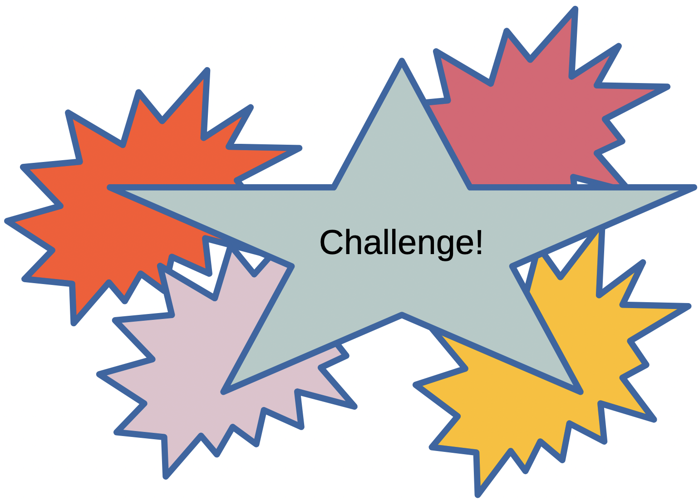

Designing Robust Python Programs
Two Essential Python Skills for Real Programs
Topics covered in today’s discussion:
__init__ and selftry / except / else / finally — structured error handlingNote
By the end, you should be able to design small object-based systems and make them resilient when things go wrong.
What Is OOP?
Object-oriented programming organizes code around objects (instances) created from classes (blueprints).
A class groups together:
Key idea: OOP helps model real systems by bundling data + behavior together.
Class, Constructor, Method
class Book:
def __init__(self, title, author, pages):
self.title = title
self.author = author
self.pages = pages
def summary(self):
return f"'{self.title}' by {self.author} ({self.pages} pages)"
b1 = Book("Python Basics", "A. Rivera", 240)
b2 = Book("Data Stories", "L. Chen", 180)
print(b1.summary())
print(b2.title)Important
How it works: Book(...) calls __init__ automatically. Each created object stores its own title, author, and pages.
selfEach Object Keeps Its Own Data
self refers to the current object, so c1 and c2 do not overwrite each other.
Guarding Against Invalid Updates
class Temperature:
def __init__(self, celsius=0):
self.set_celsius(celsius)
def set_celsius(self, value):
if value < -273.15:
raise ValueError("Temperature cannot be below absolute zero.")
self._celsius = value
def get_celsius(self):
return self._celsius
def to_fahrenheit(self):
return (self._celsius * 9 / 5) + 32
room = Temperature(21)
print(room.to_fahrenheit())Note
The attribute _celsius is a convention for “internal use.” Public methods (set_celsius, get_celsius) enforce valid state.
__str__ for Readable ObjectsA Base Class and Two Subclasses
Note
This is polymorphism: same method call (speak) produces behavior based on object type.
Modeling Relationships with Contained Objects
Design point: Composition often models “has-a” relationships cleanly (Car has an Engine).
Circle ClassCircle Classimport math
class Circle:
def __init__(self, radius):
if radius <= 0:
raise ValueError("Radius must be positive.")
self.radius = radius
def area(self):
return math.pi * self.radius ** 2
def circumference(self):
return 2 * math.pi * self.radius
def __str__(self):
return f"Circle(radius={self.radius})"
c = Circle(3)
print(c)
print(round(c.area(), 2))
print(round(c.circumference(), 2))Important
Mechanism: Validation in __init__ ensures every Circle instance is meaningful, and methods compute directly from object state.
Warning
class Employee:
def __init__(self, name, salary):
self.name = name
self.salary = salary
def annual_pay(self):
return self.salary * 12
class Manager(Employee):
def __init__(self, name, salary, bonus):
super().__init__(name, salary)
self.bonus = bonus
def annual_pay(self):
return super().annual_pay() + self.bonus
e = Employee("Avery", 5000)
m = Manager("Jules", 7000, 1500)
print(e.annual_pay())
print(m.annual_pay())Important
Mechanism: Manager inherits shared behavior and state from Employee, then overrides one method to extend the pay rule.
class InventoryItem:
def __init__(self, name, quantity):
if quantity < 0:
raise ValueError("Quantity cannot be negative.")
self.name = name
self.quantity = quantity
def restock(self, amount):
if amount <= 0:
raise ValueError("Restock amount must be positive.")
self.quantity += amount
def sell(self, amount):
if amount <= 0:
raise ValueError("Sell amount must be positive.")
if amount > self.quantity:
return "Not enough stock."
self.quantity -= amount
return "Sale completed."
def __str__(self):
return f"InventoryItem(name={self.name}, quantity={self.quantity})"
item = InventoryItem("Notebook", 10)
item.restock(5)
print(item.sell(8))
print(item)Important
Mechanism: The class centralizes inventory rules, so updates happen through methods that preserve valid stock counts.
What Is an Exception?
An exception is a runtime error event that interrupts normal program flow.
Common examples:
ValueError (bad value)TypeError (wrong type)ZeroDivisionErrorFileNotFoundErrorKey idea: Exceptions let you fail safely and explain what went wrong.
try / exceptexcept ClausesHandling Different Failures Differently
def divide_from_text(a_text, b_text):
try:
a = float(a_text)
b = float(b_text)
return a / b
except ValueError:
return "Inputs must be numbers."
except ZeroDivisionError:
return "Cannot divide by zero."
print(divide_from_text("10", "2"))
print(divide_from_text("10", "0"))
print(divide_from_text("ten", "2"))Full Exception Structure
FileNotFoundError and crash the program. ( ꩜ ᯅ ꩜;)
(·•᷄ࡇ•᷅ )
｡°(°¯᷄◠¯᷅°)°｡
else and finallyFull Exception Structure
else runs only if no exception occurs.finally runs no matter what.Enforcing Valid Object Behavior
class BankAccount:
def __init__(self, owner, balance=0):
if balance < 0:
raise ValueError("Opening balance cannot be negative.")
self.owner = owner
self.balance = balance
def deposit(self, amount):
if amount <= 0:
raise ValueError("Deposit must be positive.")
self.balance += amount
def withdraw(self, amount):
if amount <= 0:
raise ValueError("Withdrawal must be positive.")
if amount > self.balance:
raise ValueError("Insufficient funds.")
self.balance -= amount
acct = BankAccount("Alex", 100)
acct.deposit(25)
print(acct.balance)Important
Mechanism: The function isolates conversion risk inside try/except and guarantees a usable fallback value.
Warning
Define a custom exception OutOfStockError and use it in InventoryItem.sell(amount). Raise it when amount > quantity.
class OutOfStockError(Exception):
print("This is a custom exception for out-of-stock situations.")
# pass
class InventoryItem:
def __init__(self, name, quantity):
self.name = name
self.quantity = quantity
def sell(self, amount):
"""
Function to handle selling an item.
Raise ValueError if amount is not positive.
Raise OutOfStockError if amount exceeds quantity, otherwise reduce stock.
"""
# TODO: Implement this methodclass OutOfStockError(Exception):
print("This is a custom exception for out-of-stock situations.")
# pass
class InventoryItem:
def __init__(self, name, quantity):
self.name = name
self.quantity = quantity
def sell(self, amount):
if amount <= 0:
raise ValueError("Amount must be positive.")
if amount > self.quantity:
raise OutOfStockError(
f"Requested {amount}, but only {self.quantity} available."
)
self.quantity -= amount
item = InventoryItem("Pen", 3)
try:
item.sell(5)
except OutOfStockError as e:
print("Sale failed:", e)Important
Mechanism: A domain-specific exception makes stock failures explicit and easier to handle than a generic error.
Warning
Write count_lines(path) that returns number of lines. If file is missing, return 0 instead of crashing.
Important
Mechanism: The context manager handles file closing automatically, and FileNotFoundError is converted into a safe default result.

Note
(Try these first before looking at solutions!)
Rectangle with ValidationWarning
Create class Rectangle(width, height):
ValueErrorarea(), perimeter(), is_square()__str__SavingsAccount InheritanceWarning
Create Account(owner, balance) with deposit/withdraw. Create SavingsAccount(owner, balance, rate) with method apply_interest(). Use exceptions for invalid amounts.
compose + Exception SafetyWarning
Write compose(f, g) returning f(g(x)). Then write safe_compose(f, g, fallback) that catches exceptions and returns fallback.
Warning
Given lines like "Alice,92", build parse_students(lines) returning dict name→grade. Skip malformed lines and out-of-range grades using exceptions.
Warning
Create GradeBook with:
add_student(name, grade) (validate grade)curve(curve_func) returning a new dict of curved gradestop_student()passing(min_grade=60) Raise meaningful errors where appropriate.Rectangle with Validationclass Rectangle:
def __init__(self, width, height):
if width <= 0 or height <= 0:
raise ValueError("Width and height must be positive.")
self.width = width
self.height = height
def area(self):
return self.width * self.height
def perimeter(self):
return 2 * (self.width + self.height)
def is_square(self):
return self.width == self.height
def __str__(self):
return f"Rectangle({self.width} x {self.height})"
print("rect1")
width = 2
height = 4
rect1 = Rectangle(width, height)
print(f" Dimensions are: {rect1}")
print(f" My area is: {rect1.area()}")
print(f" My perimeter is: {rect1.perimeter()}")
print(f" This object a square: {rect1.is_square()}")
print("rect2")
width = 4
height = 4
rect2 = Rectangle(width, height)
print(f" Dimensions are: {rect2}")
print(f" My area is: {rect2.area()}")
print(f" My perimeter is: {rect2.perimeter()}")
print(f" This object a square: {rect2.is_square()}")Important
Mechanism: Constructor validation prevents invalid objects from ever existing. Methods become simpler because state is guaranteed valid.
SavingsAccount Inheritanceclass Account:
def __init__(self, owner, balance=0):
if balance < 0:
raise ValueError("Balance cannot be negative.")
self.owner = owner
self.balance = balance
def deposit(self, amount):
if amount <= 0:
raise ValueError("Deposit must be positive.")
self.balance += amount
def withdraw(self, amount):
if amount <= 0:
raise ValueError("Withdrawal must be positive.")
if amount > self.balance:
raise ValueError("Insufficient funds.")
self.balance -= amount
class SavingsAccount(Account):
def __init__(self, owner, balance=0, rate=0.02):
super().__init__(owner, balance)
self.rate = rate
def apply_interest(self):
self.balance += self.balance * self.rate
name = "Alice"
deposit = 1000
account = SavingsAccount(name,deposit)
print(f" Initial balance: {account.balance}")
account.deposit(500)
print(f" Balance After deposit: {account.balance}")
account.withdraw(200)
print(f" Balance After withdrawal: {account.balance}")
account.apply_interest()
print(f" Endling balance: {account.balance}")Important
Mechanism: SavingsAccount reuses base logic through inheritance and super(), then adds behavior (apply_interest) without duplicating deposit/withdraw code.
safe_composedef compose(f, g):
def composed(x):
return f(g(x))
return composed
def safe_compose(f, g, fallback=None):
def composed(x):
try:
return f(g(x))
except Exception:
return fallback
return composed
def reciprocal(x):
return 1 / x
safe = safe_compose(lambda y: y + 10, reciprocal, fallback="bad input")
print(safe(2))
print(safe(0))Important
Mechanism: Closures capture function references (f, g) and return a callable pipeline. Wrapping in try/except creates a resilient higher-order function.
parse_studentsdef parse_students(lines):
students = {}
for line in lines:
try:
name, grade_text = line.split(",")
grade = int(grade_text)
if not (0 <= grade <= 100):
raise ValueError("grade out of range")
students[name.strip()] = grade
except ValueError:
continue
return students
lines = ["Alice,92", "Bob,hello", "Cara,105", "Dylan,77"]
print(parse_students(lines)) # {'Alice': 92, 'Dylan': 77}Important
Mechanism: The parsing loop is intentionally defensive. Bad records fail locally and are skipped, while good records still accumulate.
GradeBookclass GradeBook:
def __init__(self):
self._grades = {}
def add_student(self, name, grade):
if not name:
raise ValueError("Name cannot be empty.")
if not (0 <= grade <= 100):
raise ValueError("Grade must be between 0 and 100.")
self._grades[name] = grade
def curve(self, curve_func):
curved = {}
for name, grade in self._grades.items():
new_grade = curve_func(grade)
curved[name] = max(0, min(100, new_grade))
return curved
def top_student(self):
if not self._grades:
raise ValueError("No students in grade book.")
return max(self._grades, key=self._grades.get)
def passing(self, min_grade=60):
return [
name for name, grade in self._grades.items()
if grade >= min_grade
]
gb = GradeBook()
gb.add_student("Alice", 92)
gb.add_student("Bob", 55)
gb.add_student("Charlie", 78)
print(f"Passing student(s): {gb.passing()}")
print(f"After applying curve: {gb.curve(lambda g: g + 8)}")
print(f"Top student: {gb.top_student()}")Discussion
_grades stores state in one place.add_student enforces invariants early.curve accepts any callable transformation.Object-Oriented Programming
__init__ constructs valid object stateExceptions
try / except prevent crashes in expected failure pathsraise communicates invalid operations explicitlyTip
When combined, OOP + exceptions let you build programs that are both organized and robust.